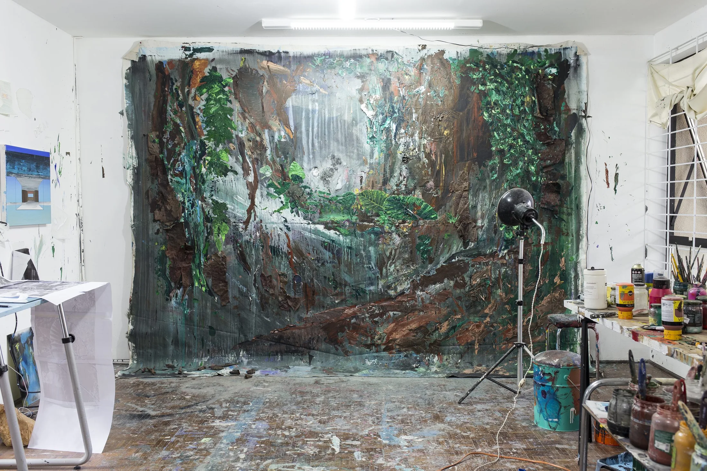
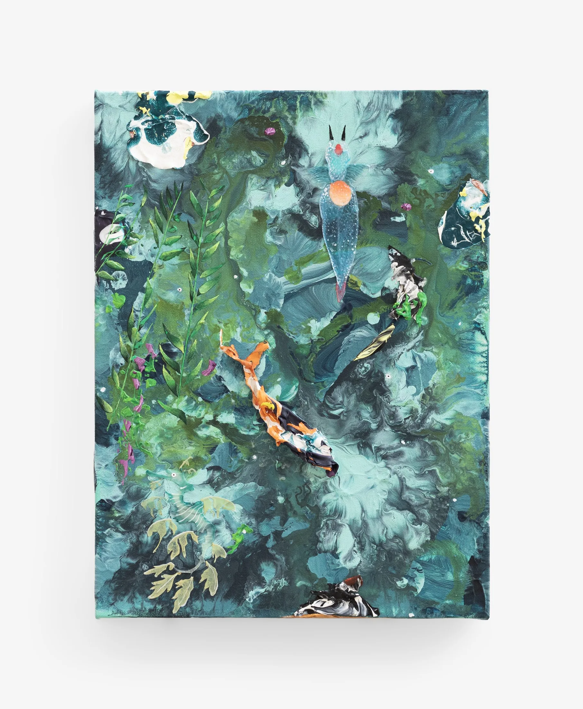
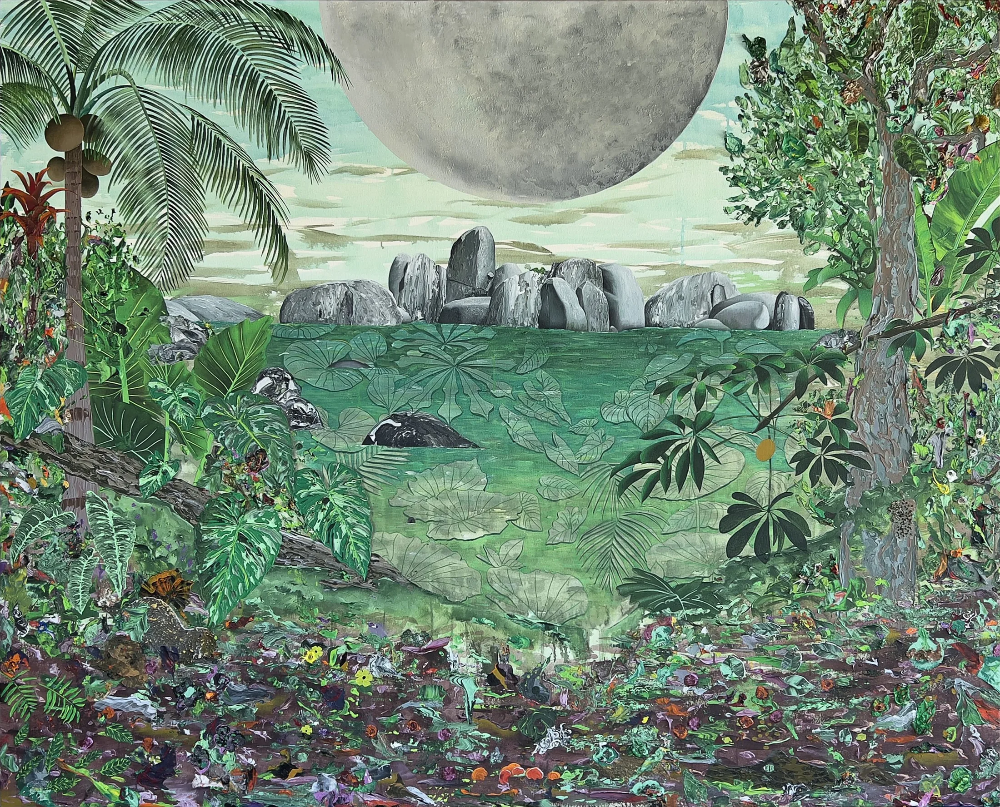
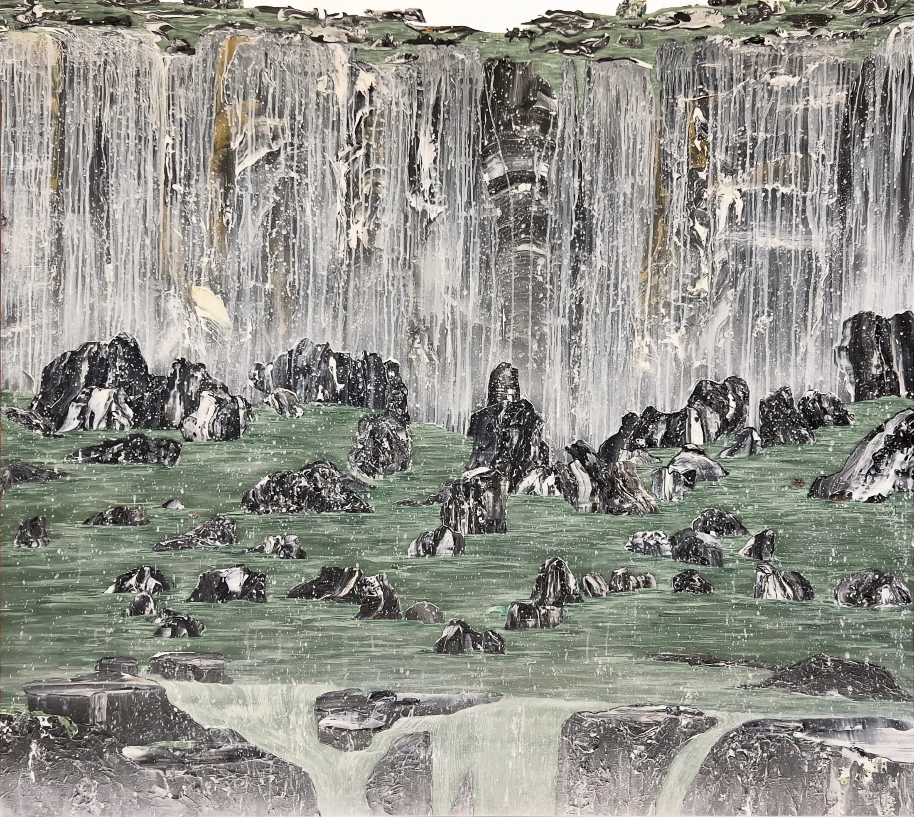


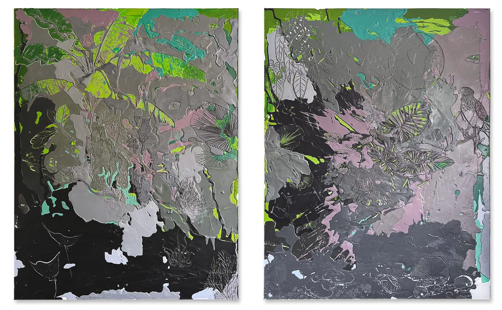
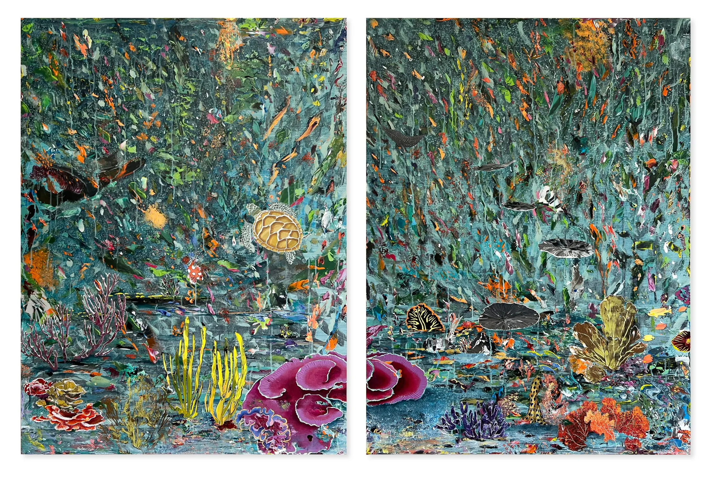

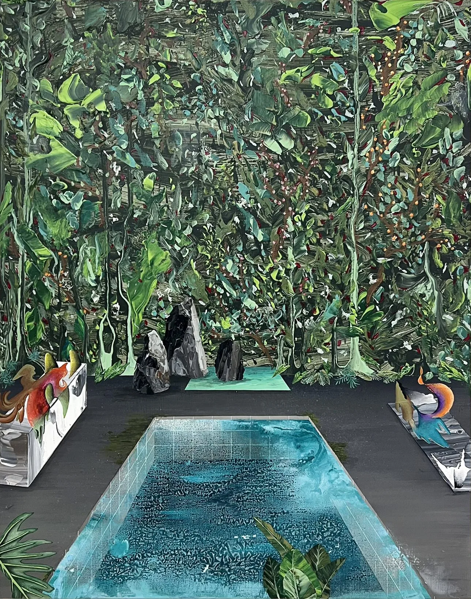
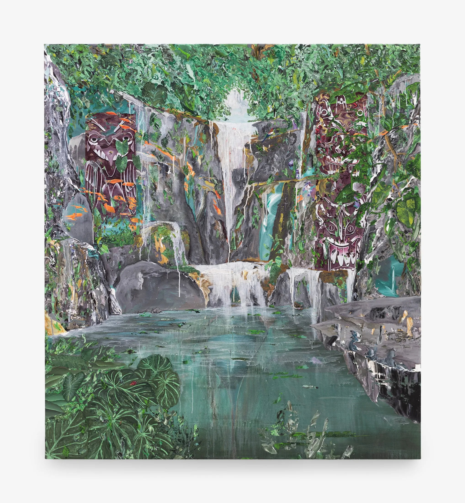

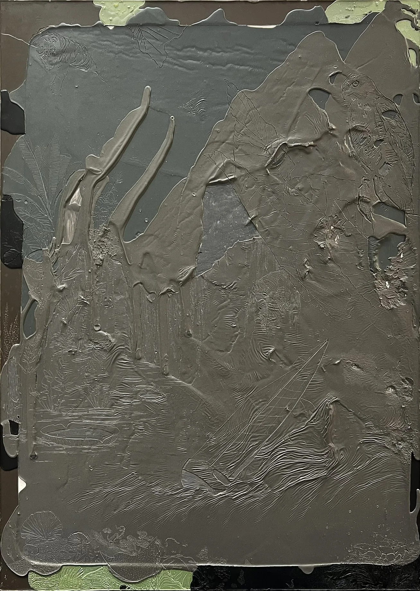

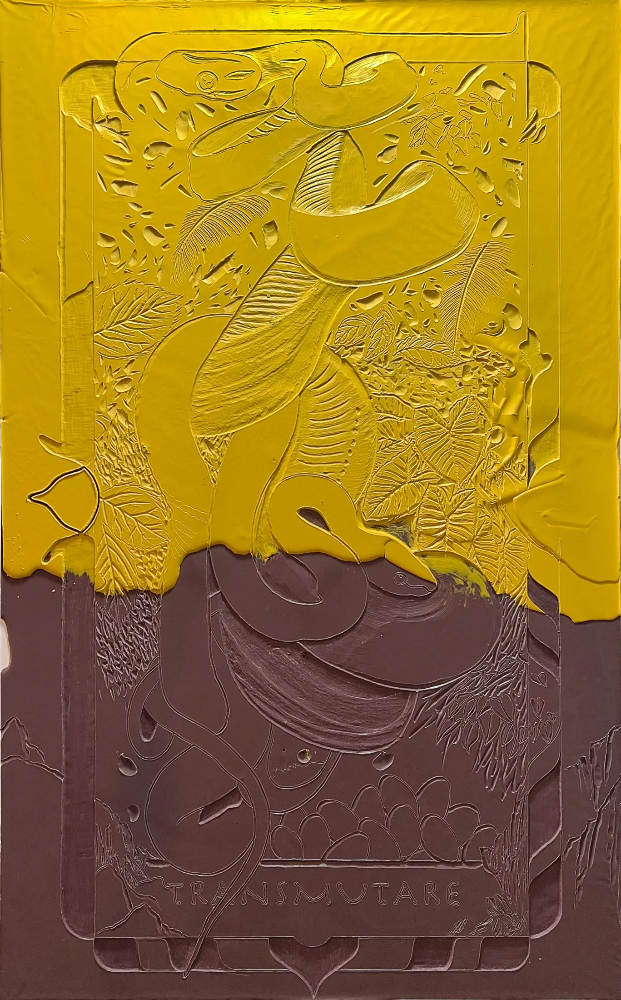
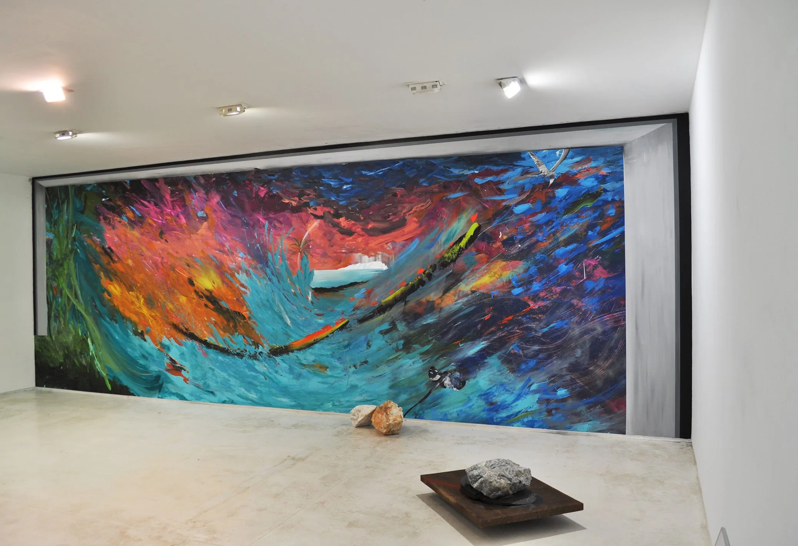
My research is driven by the curiosity to interpret life and by the alchemy present in the making of painting.
I am interested in a world revealed through two complementary paths: the path of the eye and the path of the heart.
Water is a central element within this investigation. Across oceans, ecosystems and different states of matter, it becomes a symptom of the presence of visible and invisible forces that sustain life.
The process is at the center of my practice. It is a self-provoked path of errors and discoveries, in which layers of paint continuously die and are reborn.
Painting begins as an encounter with matter. Materials are tested, transformed, accumulated and allowed to resist intention.
Layers are built and removed, surfaces are interrupted and reconstructed, allowing the image to emerge through the process itself.
The studio becomes a place of continuous experimentation, where errors and discoveries remain active within the work.
Born in Curitiba in 1985, Santos lives and works in Florianópolis, Brazil.
He holds a Bachelor’s degree in Visual Arts from Universidade Tuiuti do Paraná, completed in 2009, and has been working in the visual arts for more than 19 years.
His practice encompasses painting, encaustic and mixed media, with water occupying a central position in his research since its beginning.
His work explores the relationship between material processes, perception and the visible and invisible forces that sustain life.